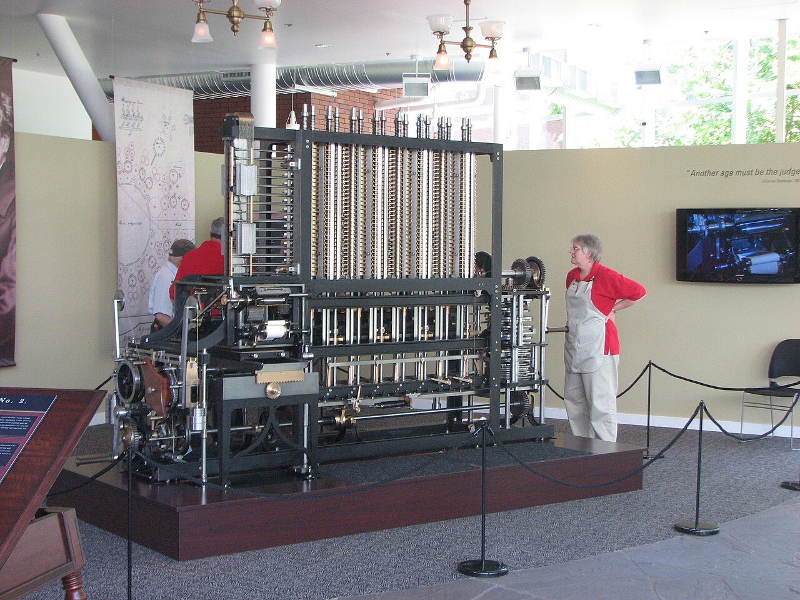

The Mechanical Mind
From Weaving Patterns to Calculating Tables
Welcome to this thematic journey through the Mimms Museum. Today, we trace the invisible thread that connects the artisanal world of 19th-century textile weaving to the high-stakes calculations of the early industrial age. This path explores how "programming" existed long before electricity, using gears, brass, and punch cards to automate human thought.
Stop 1: The Jacquard Loom (1804)
Begin in the Early Automation Gallery, specifically at the large wooden frame with the hanging chain of perforated cards.
Long before the computer, there was the loom. Joseph Marie Jacquard revolutionized the silk industry by inventing a system where a chain of punch cards controlled the weaving of complex patterns. Each hole represented a binary choice: lift the thread or leave it down. This was the first time "software" (the cards) was separated from "hardware" (the loom), allowing a single machine to produce infinitely varied designs.
Stop 2: The Difference Engine No. 2 (1822-1847 Design)
Walk past the looms into the Mechanical Calculation Wing. Look for the towering, five-ton brass and steel machine near the center.

Charles Babbage, the "Father of the Computer," realized that human mathematicians ("computers") were prone to error when calculating complex tables for navigation and engineering. His Difference Engine No. 2 was designed to calculate polynomials using the method of divided differences. While Babbage never saw it completed in his lifetime, this modern build proves his mechanical logic was flawless.
Stop 3: The Analytical Engine & Lady Lovelace (1837)
Directly to the right of the Difference Engine, find the display case containing delicate handwritten notes and technical drawings.
If the Difference Engine was a calculator, the Analytical Engine was a true computer. Babbage's second design incorporated an "Arithmetic Logic Unit" (the Mill), memory (the Store), and the ability to use punch cards—directly inspired by Jacquard. Ada Lovelace, the daughter of Lord Byron, translated a French memoir on the engine and added her own "Notes," including the first algorithm intended for a machine. She saw that the engine could go beyond numbers to process any symbol, even music.
"The Analytical Engine weaves algebraic patterns just as the Jacquard-loom weaves flowers and leaves." — Ada Lovelace, 1843
Stop 4: The Hollerith Tabulator (1890)
Turn toward the Information Age Gateway. Look for the cabinet with a series of clock-like dials and a manual press.
By 1890, the United States was growing too fast for manual census counting. Herman Hollerith adapted the punch card to record individual data points (age, sex, occupation). His Tabulating Machine could process 1,000 cards per hour, reducing a decade-long task to just months. Hollerith’s company would eventually merge with others to become the International Business Machines Corporation (IBM).
Stop 5: The IBM 029 Keypunch (1964)
Continue into the Mainframe Hall. Look for the gray desk with a typewriter-like interface and a stack of manila cards.
The punch card reached its zenith in the mid-20th century. Machines like the IBM 029 were the primary way programmers entered code and data into room-sized mainframes. This humble card—with its 80 columns of data—is the direct descendant of the silk patterns that started our tour. It reminds us that for nearly 200 years, "computing" was a physical act of punching holes in paper.
Further Reading & Sources
- Swade, Doron. The Difference Engine: Charles Babbage and the Quest to Build the First Computer. Penguin Books, 2002.
- Essinger, James. Jacquard's Web: How a Hand-Loom Led to the Birth of the Information Age. Oxford University Press, 2004.
- Fuegi, J., and J. Francis. "Lovelace & Babbage and the Creation of the 1843 'Notes'." IEEE Annals of the History of Computing, 2003.